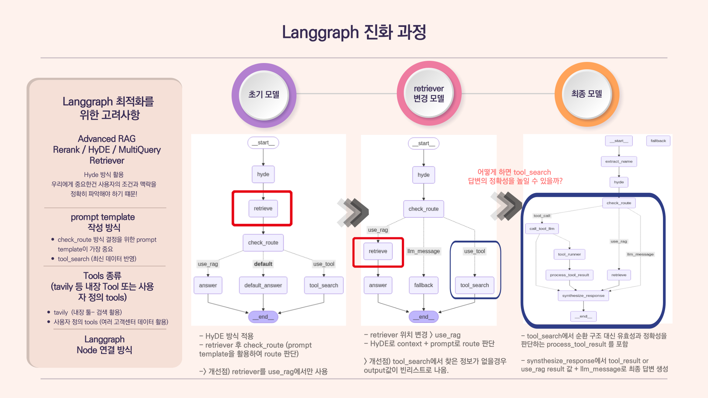
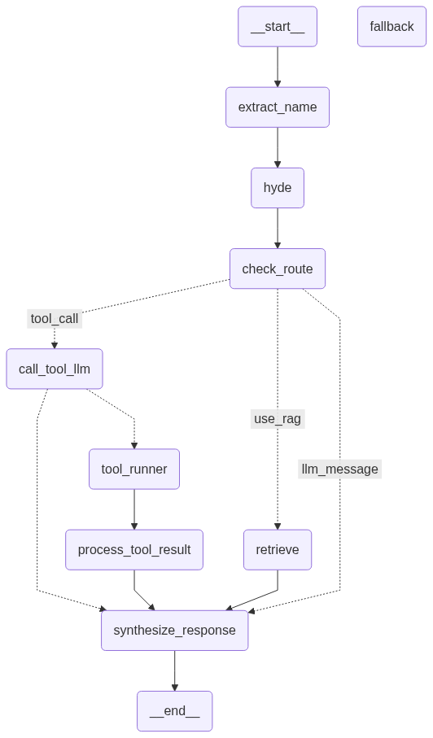

📌 프로젝트 목표
- 콘텐츠 크리에이터들이 유튜브·인스타그램·네이버 블로그 등 다양한 플랫폼에서 활동하며 경험하는
저작권 문제의 복잡성과 정보 접근성 문제를 해소하기 위한 RAG 기반 저작권 챗봇 시스템을 개발하는 것 - 이 시스템은 단순 FAQ 챗봇을 넘어, 사용자의 질문 의도와 맥락에 따라 플랫폼별 정책·국내외 저작권법·공정 이용(Fair Use) 기준 등
신뢰도 높은 정보를 검색·요약하여 제공하는 지능형 RAG 챗봇을 구현
📌 Why This Project?
- 크리에이터 산업이 급속히 성장하면서 저작권 관련 분쟁·오해·정책 혼선이 증가
- 초보 크리에이터는 “해외 플랫폼 이용 시 국내법과 플랫폼 정책 중 무엇이 우선인지” 같은 실제적 문제에서 많은 어려움을 겪음
- 저작권 관련 문서는 방대한 PDF·공공기관 문서·플랫폼 FAQ·법령 다양한 형식으로 흩어져 있으며, 플랫폼마다 지켜야할 저작권이 상이함
- 이를 해결하기 위해 사용자 질문을 정확히 분석하고 최신·정확한 문서 기반의 답변을 제공하는 RAG 시스템이 필요
📌 My Main Contributions
- 저작권 문서 데이터 수집 및 구조화된 전처리
- ChromaDB 기반 벡터 데이터베이스 구축
- Langgraph 기반 챗봇 파이프라인 설계 및 개발
📌 Other Tasks Included
- PDF 텍스트 추출 자동화 스크립트 개발(PyMuPDF 기반)
- HTML FAQ 크롤링 안정화(Selenium + BeautifulSoup).
- Figma 기반 화면 설계 및 프론트엔드 개발
- 모델 출력 오류 케이스 수집 및 라우팅 개선 반복 수행
🔍 저작권 문서 데이터 수집 및 구조화된 전처리
- 정부·공공기관 PDF 문서에서 페이지별 텍스트 블록을 추출한 뒤 문단 단위 정제 및 구조화 수행
- 문서 단위로 section / title / paragraph 메타데이터 추가해 RAG 검색 정확도 강화
- 플랫폼별 정책과 FAQ를 Selenium 기반 웹 크롤링으로 수집 후 FAQ 구조(Q/A) 형태로 JSON/CSV에 정리
- 모든 데이터에 platform, law_scope, doc_type, source, topic 등 세분화된 메타데이터 자동 태깅 파이프라인 구축
def assign_metadata(docs: list[Document]) -> list[Document]:
result = []
for doc in docs:
text = doc.page_content.lower()
metadata = doc.metadata.copy()
# 플랫폼
platforms = ["네이버", "카카오", "유튜브", "인스타그램", "naver", "kakao", "youtube", "instagram"]
matched_platforms = sorted({p for p in platforms if p.lower() in text})
if matched_platforms:
metadata["platform"] = ", ".join(matched_platforms)
# 법 영역
if any(w in text for w in ["fair use", "dmca", "united states", "미국"]):
metadata["law_scope"] = "해외"
elif any(w in text for w in ["저작권법", "공공누리", "kogl", "대한민국"]):
metadata["law_scope"] = "국내"
# 문서 유형
if any(w in text for w in ["사례", "faq"]):
metadata["doc_type"] = "사례집"
elif any(w in text for w in ["가이드", "guide"]):
metadata["doc_type"] = "가이드"
elif any(w in text for w in ["법", "조항", "제"]):
metadata["doc_type"] = "법령"
...lines of code...
🔍 ChromaDB 기반 벡터 데이터베이스 구축
- OpenAI의 text-embedding-3-large 모델을 활용해 문서의 의미 정보를 반영한 벡터DB 생성
- API 안정성과 메모리 효율성을 고려한 Batch 단위 벡터 삽입 구조 설계
embedding_model = OpenAIEmbeddings(model="text-embedding-3-large")
# 1. Chroma 인스턴스 생성
vector_store = Chroma(
embedding_function=embedding_model,
collection_name="rag_chatbot",
persist_directory="vector_store/chroma/rag_chatbot"
)
# # 2. 문서 배치 추가 함수 정의
def batch_add_documents(vector_store, documents: list[Document], batch_size: int = 500):
total = len(documents)
num_batches = math.ceil(total / batch_size)
for i in range(num_batches):
batch = documents[i * batch_size : (i + 1) * batch_size]
vector_store.add_documents(batch)
print(f"✅ Added batch {i+1}/{num_batches} (size: {len(batch)})")
batch_add_documents(vector_store, total_docs, batch_size=500)
🔍 Langgraph 기반 챗봇 파이프라인 설계 및 개발
- 초기 단일 retriever 구조에서 RAG / Tool-search / LLM 응답의 3단계 고도화된 구조로 재설계
- 초기 모델: routing 전에 retriever 단계가 있어서 비효율적인 구조
- 2단계 개선 모델: routing 후에 vector DB 검색 단계에 retriever 단계 포함
개선점: tool_search 단계에서 찾은 정보가 없을 경우, 빈 리스트 추출 - 3단계 최종 모델: tool_search 단계에서 유효성과 정확성을 판단하는 process_tool_result단계 포함
synthesize_results 단계를 추가하여 종합적인 답변을 추출하도록 하여, 빈 답변 문제 해결 - 최종 파이프라인 노드 설명


| 노드 이름 | 설명 |
|---|---|
| extract_name | 사용자 이름 추출 (예: "나 홍길동이야") → 맞춤형 응답에 활용 |
| hyde | HYDE 기법으로 검색에 적합한 문장 생성 ( query → hyde_answer) |
| check_route |
HYDE 결과와 context를 바탕으로 라우팅 분기 결정: ① use_rag (검색 사용)② tool_call (도구 호출)③ llm_message (LLM 직접 응답)
|
| retrieve | RAG 컨텍스트 문서 검색 수행 (retriever.invoke(hyde_answer)) |
| call_tool_llm | 도구 호출이 필요한 경우, LLM이 사용할 툴 판단 (search_web 등) |
| tool_runner | LLM이 선택한 실제 툴 실행 (예: ToolNode) |
| process_tool_result | 도구 실행 결과 정제 및 요약, 유효성 검증 |
| synthesize_response | 최종 응답 생성: 사용자 이름, 대화 이력, RAG/Tool 결과 기반으로 답변 생성 |
| fallback | 검색/도구 모두 실패 시 기본 메시지 출력 또는 LLM 재질문 시도 |
🔍 성능 평가 및 챗봇 품질 검증
- Faithfulness, Answer Relevancy, Context Recall·Precision 평가 지표 설계 및 측정
- 최종 성능:
- Faithfulness: 0.8668
- Answer Relevancy: 0.6371
- Context Recall: 0.8000
- Context Precision: 0.8000
- 특히 법·정책 영역에서 중요한 Faithfulness가 가장 높게 나타남
⏩ 개발 최종목표 달성 :
사용자의 개별 맥락과 경험을 반영하고, 최신 정보에 기반한 신뢰도 높은 응답을 제공하는
RAG 기반 지능형 챗봇 어플리케이션을 개발하는 것